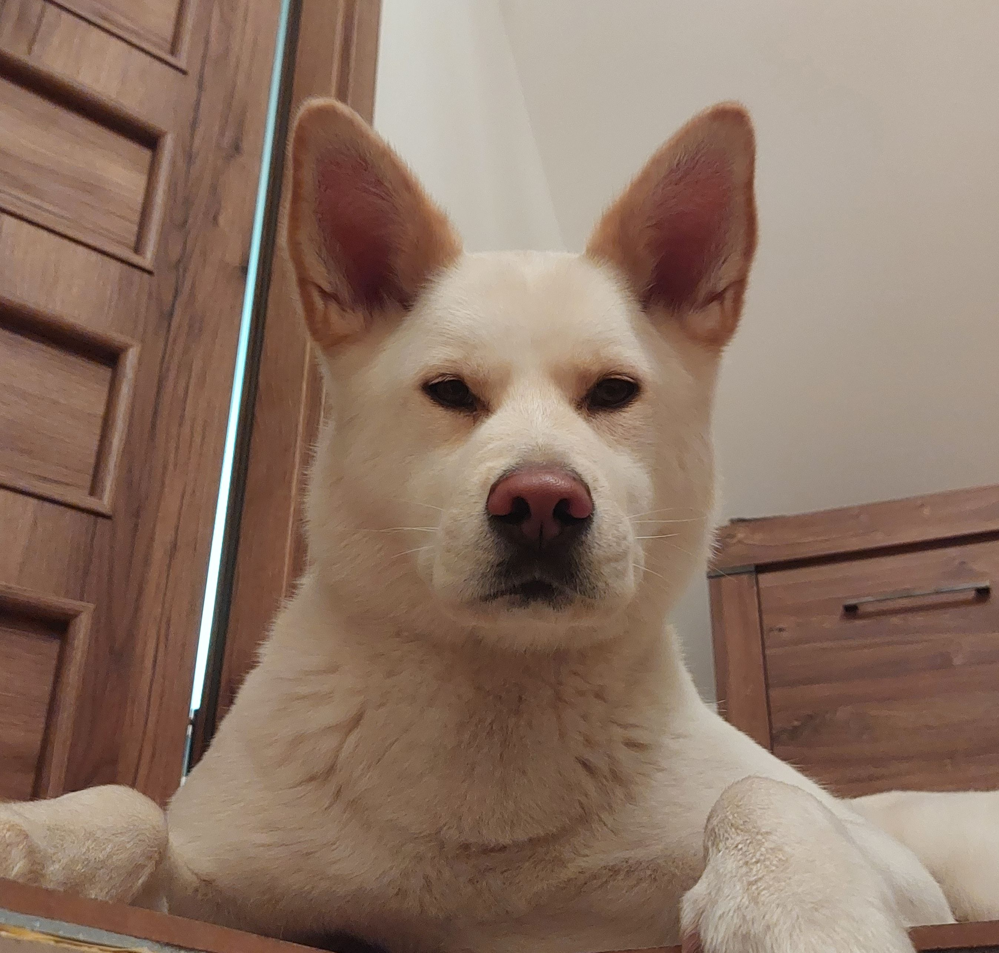

Miscellaneous
Fieldwork on Svalbard
Since 2003, my research group (and that includes me), we are working in breeding colonies of the little auk on Svalbard. For most of the years, we work in Hornsund colony (S Spitsbergen), where we have established a long-term monitoring programme, to examine the birds response to ongoing climate changes. Here is also where we ask other research questions, about [non-breeding ecology of seabirds](projects.qmd#Non-breeding ecology of polar seabirds), as well as about seabirds (namely little auk) [breeding (behavioural) ecology](projects.qmd#Breeding (behavioural) ecology). All these questions are logistically demanding (e.g requiring continous energy supply for audio/video recording), and possible in polar environment only with a considerable logistic support from a local station (Polish Polar Station here is just irreplaceable).
Hornsund is a magical spot (look here for a short footage), it is a privilege to be able to work there.
Some years (including last season: 2023) we have been also working in Magdalenefjorden (NW Spitsbergen).
Fieldwork in Tropics
Biodiversitatis: https://biodiversitatis.com.pl/komitet-naukowy/
Yuki
Yuki is not just a dog, is a life changer. Before Yuki era, the life was super hectic and running fast. With Yuki, the speed and intensity have not changed much, but quality of my life improved enormously. She has taught me (and still I am learning a lot from her) how to focus on essentials, ignore stupidity of the world and simply enjoy the day. Below you can find Yuki’s decalogue in all the languages she potentially understand, especially if you possess an extra motivator (a sausage).
Being Yuki’s kahu (as Hawaiian would call it) is big honour and responsibility. I take it seriously, and joyfully.

Polish: Dekalog Yuki
1) Nie należy siedzieć/leżeć w jednym miejscu godzinami, trzeba zmieniać i miejsca i pozycje. A jak się wstaje po lekko dłuższym siedzeniu czy leżeniu, to trzeba się rozciągnąć! Im bardziej spektakularne jest to rozciąganie tym jest efektywniejsze w podnoszeniu poziomu energii witalnej, choć trzeba uważać jak się to robi na schodach.
2) Jak jest się zmęczonym to należy odpocząć!
3) Wygłupiać (sensu szaleńczo bawić) trzeba się codziennie, najlepiej w towarzystwie, a przynajmniej przy świadkach. Chętnych do zabawy można sobie zrekrutować i właściwie nie ma opcji by odnieść tu porażkę – w najbardziej beznadziejnych przypadkach to tylko kwestia ilości włożonego czasu i intensywności rekrutacji.
4) Każdy żelazny punkt dnia (jedzenie, spacer) może być źródłem eksplodującej radości, a więc nie potrzeba wielkich rzeczy, żeby się cieszyć.
5) Z niektórymi po prostu nie da się dogadać…
6) a napotkany na drodze wróg istnieje tylko tu i teraz, wszystkie negatywne emocje jakie towarzyszą temu spotkaniu (jakkolwiek nie byłyby silne) znikają wraz z wrogiem.
7) Podczas polowania liczy się tylko polowanie - absolutna nieczułość na wszelkie bodźce zewnętrzne w dużym stopniu decyduje o powodzeniu akcji.
8) Wiele sukcesów łowieckich właściwie jest kwestią szczęścia. Świat oferuje tu całą gamę możliwości, trzeba mieć tylko oczy a przede wszystkim uszy wciąż szeroko otwarte, niezależnie od tego co się akurat robi.
9) Kuna rekonstruująca dach domu w którym się śpi, stanowi niewiele znaczącą składową krajobrazu akustycznego, którą zwyczajnie należy ignorować, ale kuna w szopie to już zupełnie inna sprawa – innymi słowy problem na który nie ma się wpływu, nie jest problemem.
10) Jak kot nie schodzi z drzewa przez trzy godziny to znaczy, że należy mu odpuścić.
English: Yuki’s Decalogue
1) Don’t sit/lie in one place for hours, you need to change both places and positions. And if you get up after sitting or lying down for a little longer, you need to stretch! The more spectacular this stretching is, the more effective it is in raising vital energy levels, although you have to be careful while doing it on the stairs.
2) If you’re tired, just rest!
3) You need to fool around (in the sense of being wildly entertained) every day, preferably in company, or at least with a few witnesses. Those willing to play can be recruited and there is virtually no option to fail here - in the most hopeless cases, it is just a question of the amount of time put in and the intensity of the recruitment.
4) Every ironclad point of the day (eating, walking) can be a source of exploding joy, you don’t need really big things to enjoy.
5) Some folks you just can’t get along with….
6) and the enemy encountered exists only here and now, all negative emotions that could accompany the encounter (however strong they may be) disappear with the enemy.
7) When hunting, all that matters is the hunt - absolute insensitivity to all external stimuli largely determines the success of the action.
8) Many hunting successes are actually a matter of luck. The world offers a whole range of possibilities, you just have to keep your eyes and, above all, your ears widely open, no matter what you are doing at the moment.
9) A marten reconstructing the roof of the house in which you are sleeping is an insignificant component of the soundscape and so you should ignore it. But a marten in a shed is entirely different matter; in other words, a problem beyond your control is not a problem.
10) If a cat doesn’t come down from a tree for three hours, that means you should let it go.
Spanish: Decálogo de Yuki
1) No permanezcas sentado/tumbado en un mismo sitio durante horas, necesitas cambiar tanto de sitio como de postura. Y si te levantas después de estar sentado o tumbado durante más tiempo, ¡necesitas estirarte! Cuanto más espectacular sea este estiramiento, más eficaz será para elevar los niveles de energía vital, aunque hay que tener cuidado al hacerlo en las escaleras.
2) Si estás cansado, ¡descansa!
3) Hay que hacer el tonto (en el sentido de entretenerse salvajemente) todos los días, preferiblemente en compañía, o al menos con algunos testigos. Se puede reclutar a quienes estén dispuestos a jugar y aquí prácticamente no hay opción al fracaso: en los casos más desesperados, sólo es cuestión de la cantidad de tiempo que se dedique y de la intensidad del reclutamiento.
4) Cada punto férreo del día (comer, pasear) puede ser una fuente de alegría desbordante, no hacen falta cosas muy grandes para disfrutar.
5) Hay gente con la que simplemente no puedes llevarte bien….
6) y el enemigo encontrado sólo existe aquí y ahora, todas las emociones negativas que pudieran acompañar al encuentro (por fuertes que sean) desaparecen con el enemigo.
7) Cuando se caza, lo único que importa es la caza: la insensibilidad absoluta a todos los estímulos externos determina en gran medida el éxito de la acción.
8) Muchos éxitos de caza son en realidad cuestión de suerte. El mundo ofrece todo un abanico de posibilidades, sólo hay que mantener los ojos y, sobre todo, los oídos bien abiertos, independientemente de lo que se esté haciendo en ese momento.
9) Una marta reconstruyendo el tejado de la casa en la que estás durmiendo es un componente insignificante del paisaje sonoro y por eso debes ignorarlo. Pero una marta en un cobertizo es algo totalmente distinto; en otras palabras, un problema que escapa a tu control no es un problema.
10) Si un gato no baja de un árbol en tres horas, significa que debes dejarlo marchar.
French: Le décalogue de Yuki
1) Ne restez pas assis/allongé au même endroit pendant des heures, vous devez changer d’endroit et de position. Et si vous vous levez après être resté assis ou allongé un peu plus longtemps, vous devez vous étirer ! Plus ces étirements sont spectaculaires, plus ils sont efficaces pour augmenter les niveaux d’énergie vitale, bien qu’il faille faire attention en les faisant dans les escaliers.
2) Si tu es fatigué, repose-toi !
3) Il faut s’amuser (dans le sens de se divertir) tous les jours, de préférence en compagnie, ou au moins avec quelques témoins. Ceux qui sont prêts à jouer peuvent être recrutés et il n’y a pratiquement aucune possibilité d’échec - dans les cas les plus désespérés, il ne s’agit que d’une question de temps et d’intensité du recrutement.
4) Chaque moment de la journée (manger, marcher) peut être une source de joie explosive, il n’est pas nécessaire de faire de grandes choses pour en profiter.
5) Il y a des gens avec lesquels on ne peut pas s’entendre….
6) l’ennemi rencontré n’existe qu’ici et maintenant, toutes les émotions négatives qui pourraient accompagner la rencontre (aussi fortes soient-elles) disparaissent avec l’ennemi.
7) À la chasse, tout ce qui compte, c’est la chasse - l’insensibilité absolue à tous les stimuli extérieurs détermine en grande partie le succès de l’action.
8) De nombreux succès de chasse sont en fait une question de chance. Le monde offre un large éventail de possibilités, il suffit de garder les yeux et surtout les oreilles largement ouverts, quoi que l’on fasse à ce moment-là.
9) Une martre qui reconstruit le toit de la maison dans laquelle vous dormez est un élément insignifiant du paysage sonore et vous devez donc l’ignorer. Mais une martre dans une cabane, c’est tout à fait différent ; en d’autres termes, un problème qui échappe à votre contrôle n’est pas un problème.
10) Si un chat ne descend pas d’un arbre pendant trois heures, cela signifie que vous devez le laisser partir.
Russian: Декалог Юки
1) Не сидите/лежите на одном месте часами, нужно менять и места, и позы. А если вы встаете после того, как посидели или полежали еще немного, вам нужно потянуться! Чем эффектнее эта растяжка, тем эффективнее она поднимает уровень жизненной энергии, хотя на лестнице нужно быть осторожным.
2) Если вы устали, просто отдохните!
3) Вам нужно каждый день дурачиться (в смысле - безудержно развлекаться), желательно в компании или хотя бы с несколькими свидетелями. Желающие играть могут быть завербованы, и здесь практически нет вариантов провала - в самых безнадежных случаях все зависит только от количества времени и интенсивности вербовки.
4) Каждый железный пункт дня (прием пищи, прогулка) может стать источником взрывной радости, вам не нужны по-настоящему большие дела, чтобы получать удовольствие.
5) С некоторыми людьми вы просто не можете ужиться…..
6) и враг, с которым вы столкнулись, существует только здесь и сейчас, все негативные эмоции, которые могли бы сопровождать встречу (какими бы сильными они ни были), исчезают вместе с врагом.
7) На охоте важна только сама охота - абсолютная невосприимчивость ко всем внешним раздражителям во многом определяет успех действия.
8) Многие успехи на охоте на самом деле являются вопросом удачи. Мир предлагает целый ряд возможностей, нужно только держать глаза и, главное, уши широко открытыми, чем бы вы ни занимались в данный момент.
9) Куница, восстанавливающая крышу дома, в котором вы спите, - незначительный компонент звукового ландшафта, и поэтому его следует игнорировать. Но куница в сарае - это совершенно другое дело; другими словами, проблема, не зависящая от вас, не является проблемой.
10) Если кошка не спускается с дерева в течение трех часов, это значит, что вы должны ее отпустить.